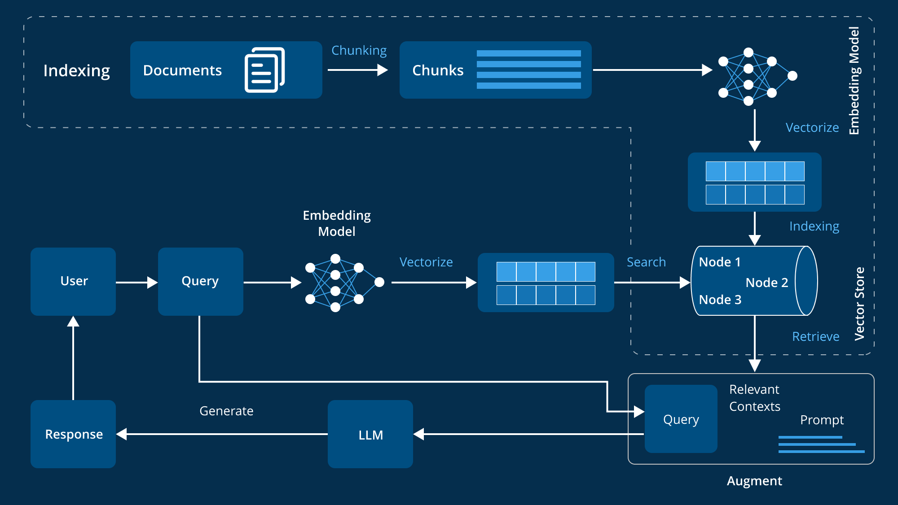

1. What is RAG?
A Large Language Model (LLM) can answer many questions from the information learned during training. However, it may not know our private documents, university information, recently updated data, or a specific collection of facts.
Retrieval-Augmented Generation (RAG) addresses this by retrieving relevant information from an external knowledge source and supplying that information to the LLM before it generates an answer.
For example, suppose we store information about RGUKT in a knowledge base. A student asks, “Where is RGUKT Basar located?” The system searches the stored information, retrieves the relevant sentence, and passes it to Gemini to generate the answer.
Why use RAG?
- It can use information that was not part of the model's training data.
- We can update the knowledge base without retraining the LLM.
- It can reduce unsupported answers by instructing the model to use retrieved context.
- It is useful for document question answering, institutional help desks and internal knowledge assistants.
2. Understand the RAG architecture
The diagram has two major workflows: indexing and question answering. Indexing prepares the knowledge base. Question answering retrieves information from it and generates a response.

A. Indexing workflow — prepare the knowledge base
- Documents: Collect the source information, such as text files, PDFs, web pages or database records.
- Chunking: Divide long documents into smaller pieces called chunks. The supplied notebook uses short text statements, so each statement is already a small unit; it does not implement a separate chunking algorithm.
- Embedding model: Convert each chunk into a numerical vector that represents aspects of its meaning.
- Vector store: Store the vectors together with their original text and identifiers. In this notebook, ChromaDB is the vector database.
B. Retrieval and generation workflow — answer a question
- The user submits a question.
- The same embedding model converts the question into a vector.
- ChromaDB searches for the most similar stored vectors and returns their associated text.
- The retrieved text is combined with the question to form a prompt. This is the augmentation step.
- Gemini 2.5 Flash generates an answer using the supplied context.
- The answer is returned to the user.
3. Step 1 — Install libraries and initialize Gemini
We use the Google Gen AI SDK to access Gemini models and ChromaDB to store and search embeddings. Run this in Google Colab:
!pip install -q -U google-genai chromadb
import chromadb
from google import genai
from google.colab import userdata
# Read the API key from Colab Secrets
api_key = userdata.get("GEMINI_API_KEY")
# Initialize the Gemini client
client = genai.Client(api_key=api_key)
# Initialize an in-memory ChromaDB client
chroma_client = chromadb.Client()
# Create or reuse a collection
collection = chroma_client.get_or_create_collection(
name="rgukt_knowledge_base"
)Before running the notebook, add a secret named GEMINI_API_KEY in Google Colab's Secrets panel and allow the notebook to access it. Do not place a real API key directly in code or publish it in a notebook.
What is a collection?
A ChromaDB collection is a named group of records. Each record can contain an ID, an embedding vector and the original document text. Here, the collection is named rgukt_knowledge_base.
chromadb.Client() creates an in-memory database in this example. Its data is not a permanent, disk-backed knowledge base and may be lost when the runtime ends.4. Step 2 — Prepare documents and generate embeddings
The notebook defines 20 short statements about RGUKT, its location, courses, subjects, learning activities and student preparation.
documents = [
"RGUKT stands for Rajiv Gandhi University of Knowledge Technologies.",
"RGUKT Basar is located in Basar, Nirmal district, Telangana.",
"Computer Science and Engineering is one of the engineering disciplines offered at RGUKT.",
"Data Structures and Algorithms are important subjects in Computer Science and Engineering.",
"Database Management Systems teach students how to organize, store, retrieve, and manage data.",
# Add the remaining knowledge statements
]An embedding is a list of numbers representing text in a vector space. Texts with related meanings are generally represented by vectors that are closer to one another according to the embedding model's similarity measure.
We use Google's gemini-embedding-001 model to create an embedding for every document.
for i, text in enumerate(documents):
embedding_response = client.models.embed_content(
model="gemini-embedding-001",
contents=text
)
embedding = embedding_response.embeddings[0].values
collection.upsert(
ids=[f"rgukt_doc_{i}"],
embeddings=[embedding],
documents=[text]
)Line-by-line explanation:
enumerate(documents)gives each text statement an index.embed_content()sends the text to the embedding model.embeddings[0].valuesextracts the numerical vector.upsert()stores the ID, vector and original text. It inserts a new record or updates an existing record with the same ID.
5. Step 3 — Store vectors in ChromaDB
ChromaDB is a vector database. It stores embeddings and provides a query operation to find records whose vectors are similar to a query vector.
| Stored field | Purpose |
|---|---|
ID, for example rgukt_doc_1 | Uniquely identifies a record in the collection. |
| Embedding | Numerical representation used for vector search. |
| Document | Original text returned after a match is found. |
After the loop finishes, the collection contains the indexed RGUKT statements. The notebook prints the number of documents to confirm how many statements were processed.
6. Step 4 — Retrieve relevant documents
Now a user asks a question:
user_query = "Where is RGUKT Located?"We must convert the question into an embedding using the same embedding model used for the documents.
query_embedding_response = client.models.embed_content(
model="gemini-embedding-001",
contents=user_query
)
query_embedding = query_embedding_response.embeddings[0].valuesNext, search the ChromaDB collection:
results = collection.query(
query_embeddings=[query_embedding],
n_results=5
)
retrieved_documents = results["documents"][0]n_results=5 asks ChromaDB to return the five nearest matching records. The result is structured by query, so results["documents"][0] selects the list of documents returned for our first (and only) query.
For the question “Where is RGUKT Located?”, a relevant stored statement is:
RGUKT Basar is located in Basar, Nirmal district, Telangana.The notebook retrieves five documents, not necessarily five sentences that all contain the exact answer. They are the top matches according to the vector search.
k controls how many matching records are returned. A small value may omit useful context; a large value may add irrelevant text and increase prompt length.7. Step 5 — Augment the prompt with retrieved context
Retrieval alone does not generate a natural-language answer. We now combine the retrieved documents into a context string and place that context alongside the user's question.
retrieved_context = "\n".join(retrieved_documents)
rag_prompt = f"""
You are an assistant answering questions about RGUKT.
Answer the user's question strictly using the information
provided in the retrieved context.
Do not use external knowledge.
Do not invent facts.
If the answer is not available in the context,
respond with: "I cannot find the answer."
Retrieved Context:
{retrieved_context}
User Question:
{user_query}
Answer:
"""This is called augmentation because we enrich the original question with relevant information retrieved from the knowledge base.
The instruction tells the LLM to use the supplied context and to say when the answer is unavailable. This helps guide the response, although prompt instructions alone cannot guarantee that a model will never make a mistake.
8. Step 6 — Generate the final answer
Finally, send the augmented prompt to Gemini 2.5 Flash:
response = client.models.generate_content(
model="gemini-2.5-flash",
contents=rag_prompt
)
print(response.text)Gemini reads the retrieved context and the question, then generates a response. For the example question, the expected answer is that RGUKT Basar is located in Basar, Nirmal district, Telangana.
gemini-embedding-001 converts text into vectors for searching. gemini-2.5-flash generates the natural-language answer. They perform different jobs.9. Complete flow in the RGUKT example
Your notebook's second example brings the stages together with 20 RGUKT knowledge statements and retrieves the top five matches.
| Stage | What the notebook does |
|---|---|
| Knowledge input | Defines 20 short RGUKT text statements. |
| Indexing | Embeds each statement and stores it with an ID and document text in ChromaDB. |
| Question | Uses “Where is RGUKT Located?” as the user query. |
| Query embedding | Embeds the question with gemini-embedding-001. |
| Retrieval | Requests the top five matching documents from ChromaDB. |
| Augmentation | Joins the retrieved documents and inserts them into the prompt. |
| Generation | Sends the prompt to gemini-2.5-flash and prints the response. |
Conceptually, the data moves like this:
RGUKT text statements
|
v
Embedding model (gemini-embedding-001)
|
v
ChromaDB collection
|
| User question
| |
| v
| Query embedding
| |
+------ Similarity search
|
v
Top 5 retrieved documents
|
v
Context + question prompt
|
v
Gemini 2.5 Flash
|
v
Final answer10. Run the notebook and experiment
- Open the notebook in Google Colab.
- Install
google-genaiandchromadb. - Add your Gemini API key to Colab Secrets as
GEMINI_API_KEY. - Run the initialization cells, then define the RGUKT documents.
- Run the indexing loop before running the retrieval cells.
- Ask a question and inspect the retrieved documents before looking at the generated answer.
Try these questions
- What does RGUKT stand for?
- Which programming languages do CSE students learn?
- What subjects are important in Computer Science and Engineering?
- How are RGUKT students evaluated?
- Does the knowledge base mention the university's founding year?
The last question is useful for testing grounding. If the retrieved context does not contain the founding year, the instructed response should be “I cannot find the answer.”
Experiment with the number of retrieved documents
# Retrieve only the closest document
results = collection.query(
query_embeddings=[query_embedding],
n_results=1
)
# Retrieve five matching documents
results = collection.query(
query_embeddings=[query_embedding],
n_results=5
)Compare the retrieved text and the generated answers. Observe whether retrieving more documents adds useful context or introduces unrelated information.
11. Important concepts and limitations
| Concept | Beginner explanation |
|---|---|
| Chunking | Splitting long source documents into smaller text units. The notebook uses short statements as its document units; it does not demonstrate a chunking library or overlap strategy. |
| Embedding | Converting text into a numerical vector so semantic similarity can be searched. |
| Vector database | Storing vectors and retrieving records with similar vectors. ChromaDB is used here. |
| Top-k | The number of nearest records requested from the vector store. |
| Context | The retrieved text supplied to the LLM to help answer the question. |
| Grounding | Guiding the LLM to base its answer on the retrieved context rather than unsupported assumptions. |
What this notebook does not yet implement
- It does not load or parse PDF, Word or other external files; the knowledge statements are manually written in Python.
- It does not split long documents into chunks or create overlapping chunks.
- It uses an in-memory ChromaDB client rather than persistent storage.
- It does not include metadata filtering, citations to source documents, reranking or an evaluation pipeline.
- It retrieves the top five matches but does not apply a relevance threshold to reject weak matches.
Final summary
RAG combines information retrieval with language generation. First, we embed and index our documents. When a question arrives, we embed the question, retrieve similar documents, add them to the prompt, and ask the LLM to generate an answer. In this tutorial, Gemini creates the embeddings and generates the answer, while ChromaDB stores and retrieves the vectors.